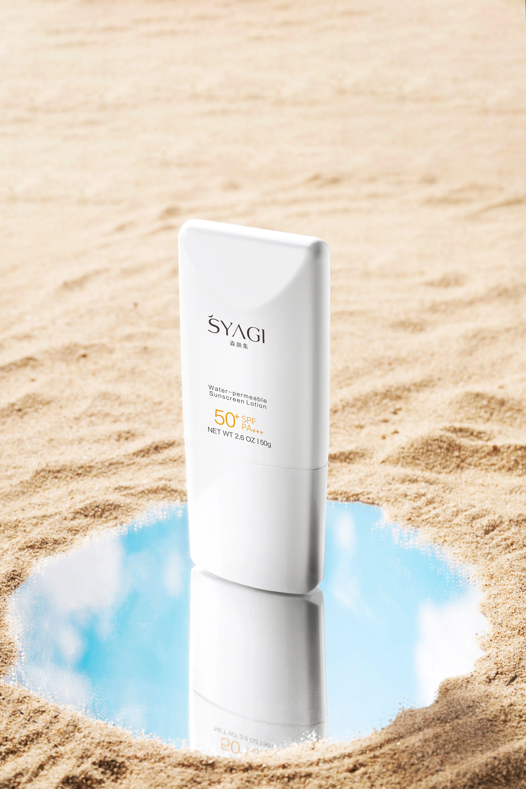

Sunscreen Stability: Why Your SPF Might Be Failing You

We've all been told that daily SPF is the single most important anti-aging tool in our arsenal. It's the non-negotiable final step of any barrier-safe routine. But there is a dangerous complacency that sets in once you've picked a bottle off the shelf. We assume that because the label says "SPF 50," we are fully protected from the moment of application until the sun goes down.
The clinical reality is far more fragile. Sunscreen is not a set-it-and-forget-it product. Between formula degradation, insufficient application density, and environmental factors, many of us are walking around with a fraction of the protection we think we have. It's time to stop treating sunscreen as a skincare product and start treating it as the critical clinical intervention that it is.
The Stability Myth
Not all UV filters are created equal, and not all of them play nice together. Some chemical filters are inherently unstable, meaning they break down and lose efficacy as soon as they are exposed to sunlight. To counteract this, modern, high-quality formulations use stabilization technology—combining specific filters to ensure the product remains photostable throughout the day.
When you choose a cheap, poorly formulated sunscreen, you aren't just paying less; you are often buying a product that effectively "expires" on your face within the first hour of exposure. Understanding these clinical nuances is why we focus so heavily on structural integrity in all our product recommendations—protection is only as good as the chemistry behind the formula.
The Density Problem
Even the most photostable formula in the world is useless if you aren't using enough of it. Clinical SPF testing is conducted at a standard application density of 2mg/cm². Most consumers apply less than half of that. When you skimp on product, you aren't just lowering your protection linearly—you are exponentially reducing your defense.
Think of it as a layer of armor; if the armor is too thin, it simply won't stop the impact. If you find your current sunscreen feels too heavy to apply in the necessary amounts, don't just use less—switch to a lighter, more elegant formula that allows for proper coverage. You can find our top picks for affordable staples that actually deliver without feeling like a thick mask.
The Reality of Reapplication
Finally, we have to talk about reapplication. Friction, sweat, and natural oil production will compromise the "film" your sunscreen creates over your skin. If you are sitting in a climate-controlled office, you might be fine, but if you are out in the world, that film is actively wearing away.
For those interested in my evening wind-down routine, you know that I place a massive emphasis on cleaning the skin at the end of the day. This is particularly vital when using high-performance sunscreens, as you need to ensure you are effectively removing the residual filters, oils, and pollutants that have accumulated in that film throughout the day.
Ultimately, sunscreen is the bridge between prevention and repair. By demanding more from your formulas and being more diligent with your application, you turn this from a "chore" into a powerful clinical habit. It's the easiest way to ensure the work you put into your skin barrier today is still visible ten years from now.
But does your sunscreen actually need to be "medical grade" to be effective, or are we just falling for expensive marketing? Next week, we're doing a side-by-side clinical test of drugstore vs. luxury SPF filters to see if the chemistry really justifies the price tag.